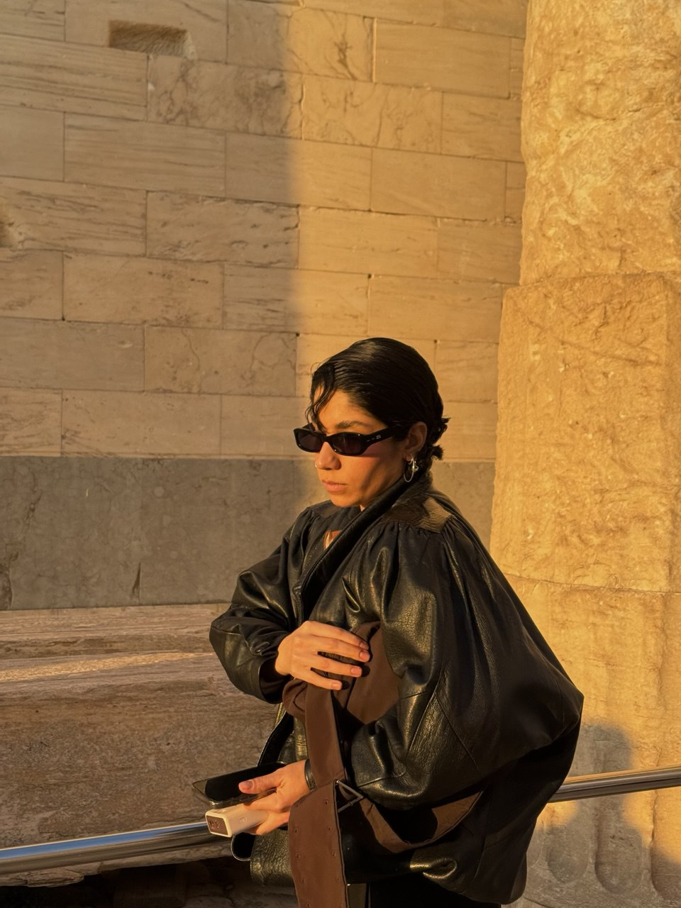

About Me
Unlike many who grew up dreaming of fashion, I never sewed clothes for my dolls, nor did I have a tailor in the family. Fashion was not an obvious destination for me. What I always felt, however, was a strong need to create and to build, an intuition that led me to architecture. Studying architecture trained me to think structurally while remaining creative.
By the end of that path, I felt the need for a different kind of expression , something I could no longer fully find within architecture. This, together with my hunger to always learn more and see more of the world, led me to Italy, where I pursued an MA in Fashion Studies. The course allowed me to explore fashion from multiple perspectives, from history and archives to marketing and visual culture, giving me a broad understanding of the industry rather than focusing on one single role.
During my observation of the fashion industry, I became increasingly drawn to the ambiguity of styling , a space between creativity, research, and visual interpretation. This curiosity led me to dedicate my MA thesis to styling, titled The Bastard Art: Styling as Authorship and Cultural Labor.
To deepen this interest, I completed a short styling course at UAL and began translating theory into practice by working on creative projects with upcoming talents as a stylist and art director, while also assisting stylists on commercial and editorial productions , experiences I consider a real masterclass.
Having lived and worked across different countries has shaped the way I see the world, allowing me to think beyond fixed frameworks and embrace multiple perspectives. As a quick learner, I am constantly looking for new ways to grow, and today I develop my voice through styling, storytelling, visual research, and image-making.
I am ready to bring my experiences into practice and continue deepening my voice through styling, assisting, creative direction, content creation, and image consulting.

Download CV